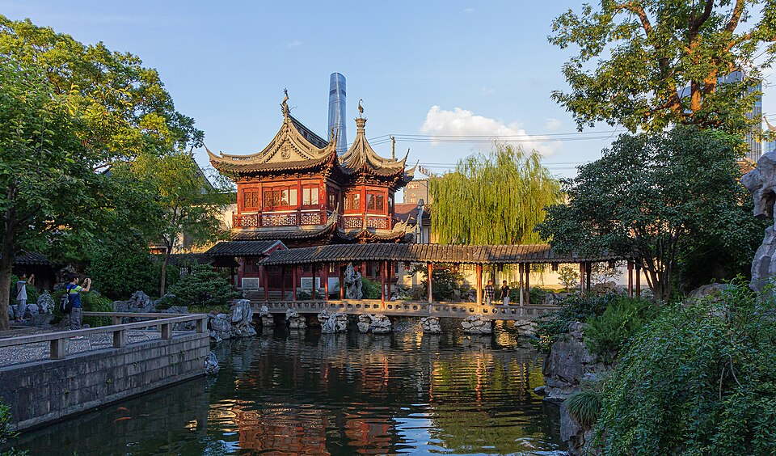
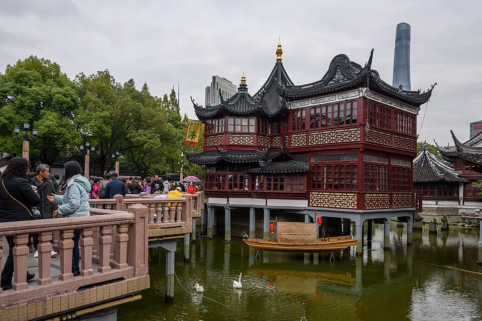
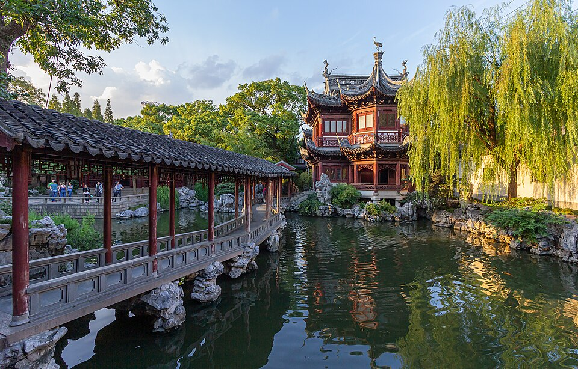
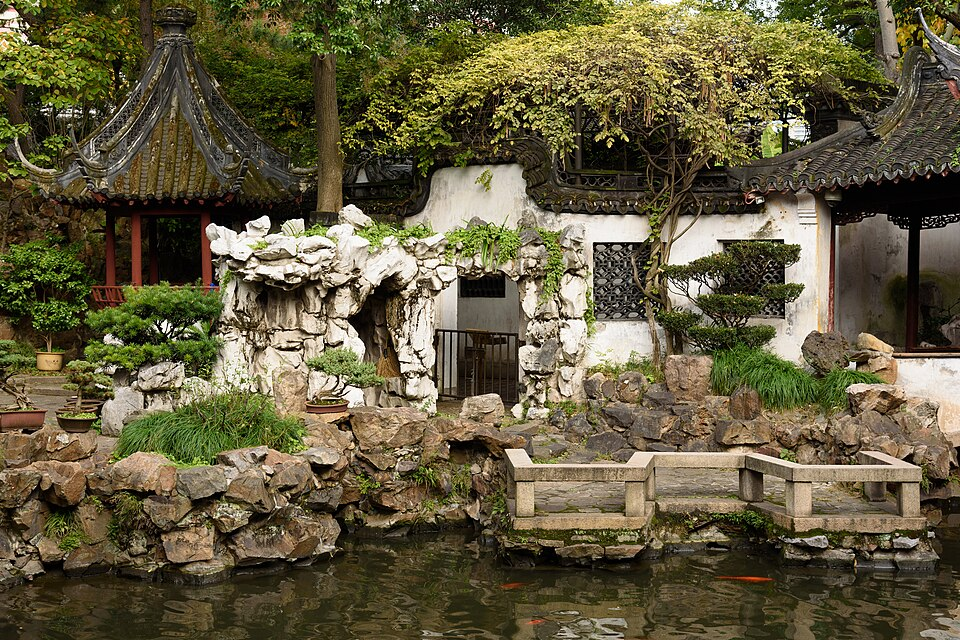
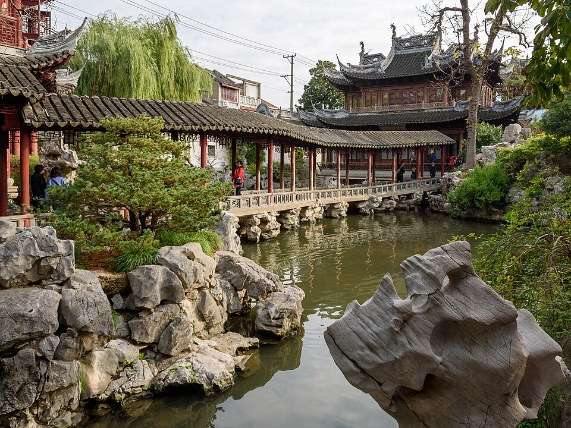
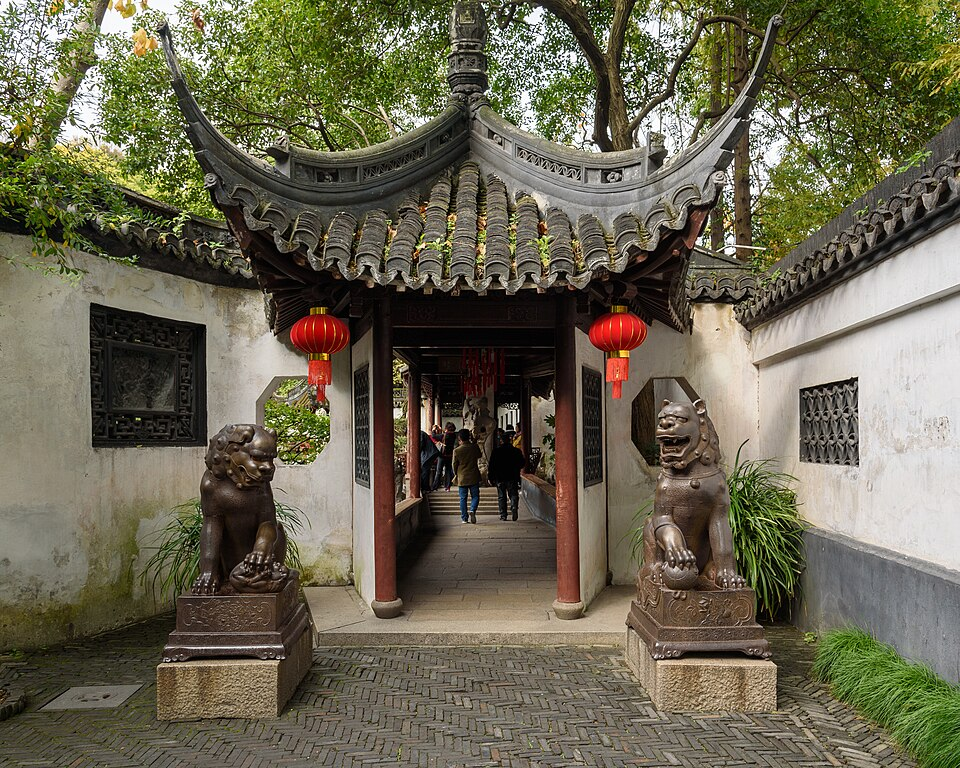

1Yu Garden и старый город


















Сад заложил в 1559 году, при династии Мин, чиновник Pan Yunduan: для отца-министра на старость. «Yu» значит «радовать родителей». Сейчас это памятник под охраной государства: больше 40 видовых точек, павильоны, пруды, искусственные скалы.
Главная реликвия - камень Exquisite Jade Rock (玉玲珑): пористая глыба 3,3 м и 5 тонн. По легенде её везли в императорский сад династии Сун, лодка затонула, и камень достали из реки Huangpu.
Вплотную к саду, без билета: чайный домик Huxinting посреди пруда, храм бога города (City God Temple) и базар Yuyuan.
| Часы | 9:00-16:30, вход до 16:00 |
|---|---|
| Выходной | понедельник (во вторник открыт) |
| Билет | 40 ¥ (высокий сезон, сентябрь-ноябрь) |
| Где купить | кассы у северных и южных ворот или мини-программа «上海豫园» |
| С собой | паспорт |
| На месте | 1-1,5 ч |
Источник: официальный сайт yugarden.com.cn (часы, кассы, цены); история - Wikipedia. Проверено 27.10.2026 11:28 по Шанхаю.
Как добраться
- Такси от отеля 6 км, 15-20 мин днём. Показать водителю: 豫园 北门 · 福佑路168号 (северные ворота).
- Метро: станция Yuyuan Garden, линии 10 и 14.
Рядом


Фото: Wikimedia Commons, автор и лицензия под каждым. Пешие отрезки и такси: OSRM. ← ко всему плану